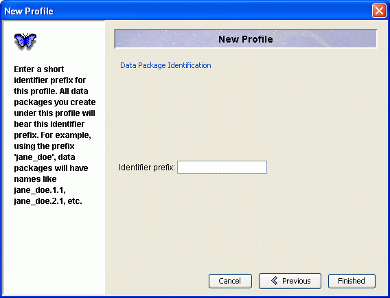

Morpho User Guide
|
|
Morpho User Guide
|
| Getting Started |
|
To download Morpho, go to "http://knb.ecoinformatics.org/morphoportal.jsp" and choose the link corresponding to your platform (Morpho can be used on Windows, Linux, and Mac). You will have the option of downloading Java along with Morpho if you do not already have it. |
Register for the Knowledge Network for Biocomplexity (KNB) Before you start using Morpho, register for the KNB. Go to "http://ldap.ecoinformatics.org/cgi-bin/ldapweb.cgi?cfg=knb" and fill out the form pictured below. Write down your username and password somewhere secure. Registering will provide you with access to some advanced metadata and data services from the KNB, and does not install any networked spyware on your system, nor does it require that you be on a network in order to use Morpho. If you do not have access to the Internet, or you do not want to register for the KNB, Morpho will still work, but you will only be able to store your metadata files locally, and will not be able to login to the KNB to take advantage of the advanced storage, access, and querying capabilities provided by the Metacat server.
|
Open Morpho and Create a Profile Open Morpho by double-clicking on its icon or the
file called "Morpho.bat". The first time you execute Morpho, you will be asked
to create a new profile. This profile allows you to use Morpho locally
on your personal
computer and, once registered for the KNB (see preceding "Register
for the KNB" section), will allow you to create, access, edit, and
search for metadata and data on the KNB. If you are upgrading Morpho from a previous version,
you will still be prompted to create a new profile. If you want to
continue using
your old profile(s) (so that your locally-stored data continue to
be visible), simply enter a "new profile" with the same name as the
old one, and you will be prompted if you would like to use the existing
profile. For example, if your old profile is named "jdoe", then enter "jdoe" as
the name of the new profile, and when you finish the profile wizard,
Morpho will ask if you want to keep your existing profile (click "Yes").
This will only work if you logged into your computer with the same
account under which your old profile existed. Enter your profile name, and your first and last names, under "Basic Information" in the New Profile screen, pictured below. Your profile name does NOT have to be the same as your KNB username.
|
Click "Next" to move on to the "Network Account Information" screen, pictured below. Here you should enter the username and select the organization which you entered when you registered for the KNB. If you decided to not register for the KNB, you can enter any username here, but you will not be able to login to the KNB using this profile.
|
Click "Next" to move to the "Data Package Identification" screen, pictured below. The identifier prefix that you enter will become the prefix of your stored metadata file names. For example, using the prefix "jane_doe", your files will have names like jane_doe.1.1, jane_doe.2.1, etc.

|
Click "Finished" to move on to the Main Welcome Screen of Morpho, described in the next section.
|
|
! By entering your password and clicking on "login" in the "Network Status" box, you will be able to create, edit, search, access, and manage data that are stored both locally (on your computer) and on the KNB network. If you choose not to login, you will be able to do all the previous operations locally, and may search for data sets on the KNB network. However, you will not be allowed to create or edit data sets on the KNB network unless you are logged in via a valid KNB account. You can always login at a later time as well.
The next screen you will see after logging in is The Main Welcome Screen. Read about it in the next section. |